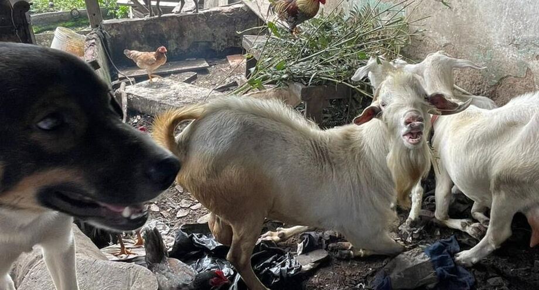
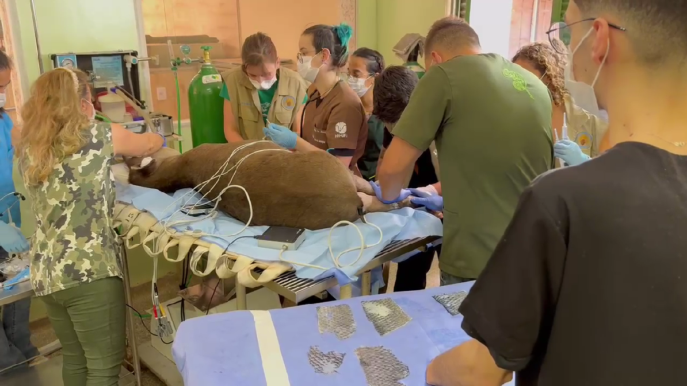

“Desesperador”, diz veterinária à frente de resgate de animais no RS
A bióloga e médica veterinária de Santa Catarina Aracelli Hammann atendeu um chamado da Defesa Civil Nacional e está no município de Canoas (RS), juntamente do Grupo de Resposta a Animais em Desastres, auxiliando no resgate de animais na tragédia da enchente que atingiu o Rio Grande do Sul nos últimos dias.
Saiba MaisEm 13 dias, 35,2 animais foram resgatados por hora, em média, no RS
O Grupo de Resgate de Animais em Desastres (GRAD), com o Ministério do Meio Ambiente e a Defesa Civil, tem 80 voluntários atuando na linha de frente em busca dos bichos desde 1° de maio, no início das enchentes que afetam o Rio Grande do Sul.
Saiba Mais
Mais de 70 animais são resgatados em situação de maus tratos em Itanhaém
Mais de 70 animais foram resgatados na tarde de terça-feira (1º), em situação de maus tratos, no bairro Jardim Vergara, em Itanhaém. Os animais estavam em condições de insalubridade, em meio a sujeira, sem água e sem comida, em uma casa de um idoso de mais de 70 anos, que morava sozinho com esses animais.
Saiba Mais
Animais resgatados dos incêndios florestais recebem tratamento do GDF
Um trabalho ininterrupto executado pelo Governo do Distrito Federal (GDF) para atender os animais vítimas dos incêndios que atingiram o DF nas últimas semanas tem promovido resgates e tratamentos por meio de órgãos ambientais com a estrutura necessária para a recuperação da fauna do Cerrado.
Saiba Mais